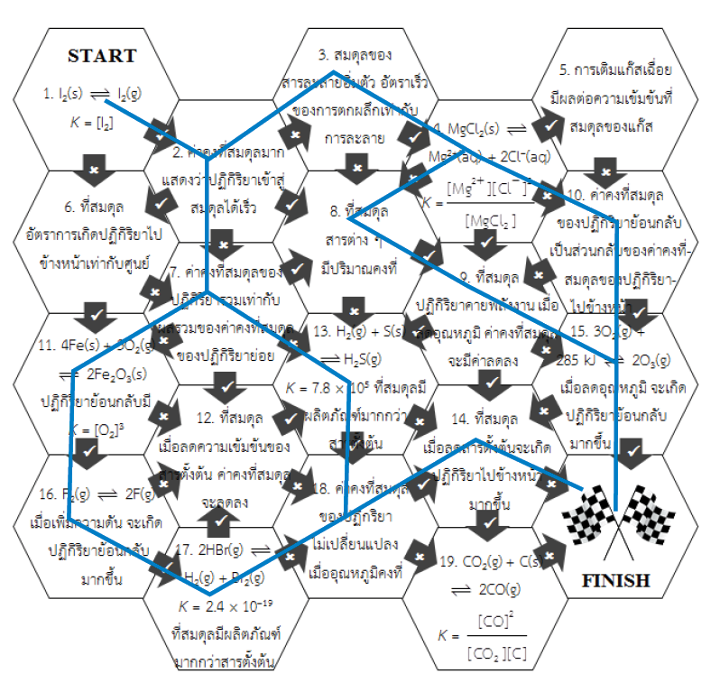

สมดุลเคมี
กลับได้ไหมนะ?
กระดาษที่ไหม้ไปแล้ว…
กระดาษได้ไหม?
ไม่ได้ !
เกิดไปทางเดียว
สารตั้งต้นเปลี่ยนไปเป็น ผลิตภัณฑ์
ได้อย่าง สมบูรณ์ โดยดำเนินไปใน ทิศทางเดียว
ตัวอย่าง
การเผาไหม้มีเทน CH4(g) + 2O2(g) → CO2(g) + 2H2O(l)
Mg ทำปฏิกิริยากับกรด Mg(s) + 2HCl(aq) → MgCl2(aq) + H2(g)
ย้อนกลับได้
น้ำในขวดปิด ระเหย เป็นไอน้ำ
และไอน้ำ ควบแน่น กลับเป็นน้ำ
เช่นเดียวกับ น้ำแข็ง H2O(s) ⇌ น้ำ H2O(l)
← เป็นการเปลี่ยนแปลงทางกายภาพ (physical change)
ปฏิกิริยาที่ผันกลับได้
ปฏิกิริยาที่สารตั้งต้นทำปฏิกิริยากันเกิดเป็นผลิตภัณฑ์แล้ว ผลิตภัณฑ์ สามารถเกิดปฏิกิริยาย้อนกลับมาเป็น สารตั้งต้น ได้ เรียกว่า ปฏิกิริยาที่ผันกลับได้ (reversible reaction)
เขียนลูกศรแบบ
สัญลักษณ์ ⇌
ไปข้างหน้า & ย้อนกลับ
ซ้าย → ขวา (สารตั้งต้น → ผลิตภัณฑ์)
เรียกว่า ปฏิกิริยาไปข้างหน้า
forward reaction
ขวา → ซ้าย (ผลิตภัณฑ์ → สารตั้งต้น)
เรียกว่า ปฏิกิริยาย้อนกลับ
reverse reaction
สารตั้งต้นของปฏิกิริยาย้อนกลับ คือ C และ D
จากปฏิกิริยา N2(g) + 3H2(g) ⇌ 2NH3(g)
สารตั้งต้นของปฏิกิริยาย้อนกลับคือข้อใด
ปฏิกิริยาย้อนกลับเริ่มจากฝั่งขวา → NH3 สลายกลับเป็น N2 และ H2
การเปลี่ยนแปลงใดย้อนกลับได้
H2O(s) ⇌ H2O(l) — ส่วนข้ออื่นได้สารใหม่ที่กลับเป็นสารเดิมเองไม่ได้
CuSO4 + HCl
สีจะเปลี่ยนกลับไปกลับมาได้ไหม?
จุดประสงค์
สังเกตการเปลี่ยนแปลงที่ผันกลับได้ จากการเปลี่ยนสีของสารละลาย
สารเคมี
- สารละลาย CuSO4 อิ่มตัว
- สารละลาย HCl 6 mol/dm3
- น้ำกลั่น
ขั้นตอน
ใส่สารละลาย CuSO4 อิ่มตัว ลงในหลอดทดลองขนาดเล็ก 2 หลอด หลอดละ 5 หยด
เติมน้ำกลั่น 15 หยดลงในหลอดที่ 1 เขย่า แล้วตั้งทิ้งไว้เพื่อใช้ เปรียบเทียบสี
หยดสารละลาย HCl 6 mol/dm3 ลงในหลอดที่ 2 ทีละหยด เขย่าจนสารละลายเปลี่ยนสี แล้วบันทึกผล
หยด น้ำกลั่น ลงในหลอดที่ 2 (สารละลายจากข้อ 3) ทีละหยด เขย่าจนสารละลายเปลี่ยนสี แล้วบันทึกผล
ทำซ้ำข้อ 3–4 กับสารในหลอดที่ 2 แล้วสังเกตการเปลี่ยนแปลง
- ใส่ CuSO₄ อิ่มตัว หลอดละ 5 หยด
- เติมน้ำกลั่น 15 หยด ลงหลอด 1
- หยด HCl ลงหลอด 2 จนเปลี่ยนสี
- หยดน้ำกลั่นลงหลอด 2 จนเปลี่ยนสี
- ทำซ้ำข้อ 3–4 กับหลอด 2
มองระดับไอออน · หลอด 2
ผลการทดลอง
| ขั้น | หลอด | สารที่เติม | สีที่สังเกตได้ | |
|---|---|---|---|---|
| 2 | 1 | น้ำกลั่น 15 หยด | สีฟ้า (อ่อน) | |
| 3 | 2 | HCl ทีละหยด | สีเขียว (อมเหลือง) | |
| 4 | 2 | น้ำกลั่นทีละหยด | สีฟ้า | |
| 5 | 2 | HCl ซ้ำ | สีเขียว | |
| 5 | 2 | น้ำกลั่นซ้ำ | สีฟ้า | |
อธิบายผล
สี ฟ้า
สี เหลือง (ผสมกับสีฟ้า → เห็นเป็นสีเขียว)
เติม HCl ซึ่งมี Cl− เพิ่ม
→ เกิดปฏิกิริยา ไปข้างหน้า
ได้ [CuCl4]2− มากขึ้น → สีเขียว
เติมน้ำกลั่น (H2O) เพิ่ม
→ เกิดปฏิกิริยา ย้อนกลับ
ได้ [Cu(H2O)6]2+ กลับมา → สีฟ้า
คำถามท้ายการทดลอง
1. หลอดที่ 1 มีไว้เพื่ออะไร
→ ใช้เปรียบเทียบสี ยืนยันว่าการเติมน้ำอย่างเดียวทำให้สีฟ้าจางลง แต่ไม่ทำให้เป็นสีเขียว
2. เมื่อเติม HCl สีเปลี่ยนเพราะอะไร
→ Cl− เข้าไปแทนที่ H2O รอบ Cu2+ เกิด [CuCl4]2− (ปฏิกิริยาไปข้างหน้า)
3. เมื่อเติมน้ำ สีกลับเป็นสีฟ้าเพราะอะไร
→ เกิดปฏิกิริยาย้อนกลับ ได้ [Cu(H2O)6]2+ ซึ่งมีสีฟ้ากลับมา
4. การทดลองซ้ำให้ผลเหมือนเดิม แสดงว่าปฏิกิริยานี้เป็นปฏิกิริยาประเภทใด
→ ปฏิกิริยาที่ผันกลับได้ เกิดได้ทั้งไปข้างหน้าและย้อนกลับ
จำให้ขึ้นใจ
ปฏิกิริยาส่วนใหญ่เกิดไปทางเดียว →
ปฏิกิริยาที่ผันกลับได้ เกิดได้ ทั้งสองทิศทาง ⇌
ซ้าย → ขวา = ไปข้างหน้า · ขวา → ซ้าย = ย้อนกลับ
CuSO4 + HCl : ฟ้า ⇌ เขียว สลับไปมาได้ด้วยการเติม HCl หรือน้ำ
เรื่องที่ 2
ได้เมื่อไหร่นะ?
เกิดในระบบปิดเท่านั้น
ระบบเปิด
สารเข้า–ออกจากระบบได้
ไอน้ำหนีออกไป ไม่กลับมา
ระบบปิด
สารเข้า–ออกจากระบบไม่ได้
ระเหยแล้วควบแน่นกลับได้
ภาวะสมดุลเกิดได้ใน ระบบปิด เท่านั้น
เป็นปฏิกิริยาที่ผันกลับได้
ปฏิกิริยาต้องเป็นปฏิกิริยาที่ ผันกลับได้ คือเกิดได้ทั้งไปข้างหน้าและย้อนกลับ
ปฏิกิริยาที่เกิดไปทางเดียว (→) ไม่เกิดภาวะสมดุล
อัตราไปข้างหน้า = อัตราย้อนกลับ
ที่ภาวะสมดุล อัตราการเกิดปฏิกิริยาไปข้างหน้า เท่ากับ อัตราการเกิดปฏิกิริยาย้อนกลับ
ปฏิกิริยาไม่ได้หยุด ยังเกิดทั้งสองทิศทางตลอดเวลา แต่เร็วเท่ากัน
สมบัติของระบบคงที่
ที่ภาวะสมดุล สมบัติของระบบ เช่น สี กลิ่น รส ความเข้มข้น จะ คงที่
ความเข้มข้นคงที่ ไม่ได้แปลว่าสารตั้งต้นกับผลิตภัณฑ์มีความเข้มข้นเท่ากัน
เงื่อนไขของภาวะสมดุล
เกิดในระบบปิดเท่านั้น
เป็นปฏิกิริยาที่ผันกลับได้ ⇌
อัตราไปข้างหน้า = อัตราย้อนกลับ
สมบัติของระบบคงที่ (สี กลิ่น รส ความเข้มข้น)
ภาวะสมดุลระหว่าง Fe3+ และ Fe2+
ตอนที่ 1 · เริ่มจาก Fe3+ + I−
- Fe(NO3)3 0.05 mol/dm3
- KI 0.05 mol/dm3
- K3Fe(CN)6 0.5 mol/dm3
- น้ำแป้งสุก
- NH4SCN 0.5 mol/dm3
ตอนที่ 2 · เริ่มจาก Fe2+ + I2
- (NH4)2Fe(SO4)2 0.05 mol/dm3
- สารละลายไอโอดีนในเอทานอล
- NH4SCN 0.5 mol/dm3
เราจะพิสูจน์อะไร?
ตอนที่ 1 · ไปข้างหน้า
เริ่มจาก Fe3+ + I− แล้วตรวจว่า…
ตรวจ Fe2+ ด้วย K3Fe(CN)6 → ตะกอนน้ำเงินเข้ม
ตรวจ I2 ด้วย น้ำแป้งสุก → สีน้ำเงินเข้ม
ตรวจ Fe3+ ด้วย NH4SCN → สีแดง
ตอนที่ 2 · ย้อนกลับ
เริ่มจาก Fe2+ + I2 แล้วตรวจว่า…
ตรวจ Fe3+ ด้วย NH4SCN → สีแดง
ขั้นตอน
ใส่ Fe(NO3)3 และ KI (0.05 mol/dm3) ลงในหลอดเล็ก 2 หลอด หลอดละชนิด ชนิดละ 5 หยด เก็บไว้เทียบสี
หลอดเล็ก 4 หลอด ใส่ Fe(NO3)3 หลอดละ 5 หยด แล้วใส่ KI หลอดละ 10 หยด ปิดจุก เขย่าเบา ๆ ตั้งไว้จนไม่เปลี่ยนแปลง เทียบสีกับข้อ 1
หลอด 1 เก็บไว้เทียบสี · หลอด 2 เติม K3Fe(CN)6 · หลอด 3 เติม น้ำแป้งสุก · หลอด 4 เติม NH4SCN หลอดละ 2 หยด
สังเกตและเปรียบเทียบสีของหลอด 2–4 กับหลอด 1 แล้วบันทึกผล
ผลการทดลอง ตอนที่ 1
| หลอด | สารที่ใส่ | สีที่สังเกตได้ | แสดงว่ามี | |
|---|---|---|---|---|
| เทียบสี | Fe(NO3)3 | สีเหลืองอ่อน | – | |
| เทียบสี | KI | ไม่มีสี | – | |
| 1–4 | Fe(NO3)3 + KI | สีน้ำตาล | – | |
| 2 | + K3Fe(CN)6 | ตะกอนสีน้ำเงินเข้ม | Fe2+ | |
| 3 | + น้ำแป้งสุก | สีน้ำเงินเข้ม | I2 | |
| 4 | + NH4SCN | สีแดง | Fe3+ | |
ขั้นตอน
ใส่ (NH4)2Fe(SO4)2 0.05 mol/dm3 และไอโอดีนในเอทานอล ลงในหลอดเล็ก 2 หลอด หลอดละชนิด ชนิดละ 5 หยด เก็บไว้เทียบสี
หลอดเล็กอีก 1 หลอด ใส่ (NH4)2Fe(SO4)2 10 หยด แล้วเติมไอโอดีนในเอทานอล 5 หยด ปิดจุก เขย่าเบา ๆ เทียบสีกับข้อ 1
เติม NH4SCN 0.5 mol/dm3 2 หยด ลงในสารจากข้อ 2 สังเกตการเปลี่ยนแปลงแล้วบันทึกผล
ผลการทดลอง ตอนที่ 2
| หลอด | สารที่ใส่ | สีที่สังเกตได้ | แสดงว่ามี | |
|---|---|---|---|---|
| เทียบสี | (NH4)2Fe(SO4)2 | สีเขียวอ่อน (เกือบไม่มีสี) | – | |
| เทียบสี | I2 ในเอทานอล | สีน้ำตาล | – | |
| สารผสม | Fe2+ + I2 | สีน้ำตาล | – | |
| สารผสม | + NH4SCN | สีแดง | Fe3+ | |
สรุปตอนที่ 1
Fe(NO3)3 ผสมกับ KI เกิดปฏิกิริยา
2Fe3+(aq) + 2I−(aq) → 2Fe2+(aq) + I2(aq)เติม K3Fe(CN)6 ได้ตะกอนสีน้ำเงิน แสดงว่ามี Fe2+
K+(aq) + Fe2+(aq) + [Fe(CN)6]3−(aq) → KFe[Fe(CN)6](s)เติมน้ำแป้งสุก ได้สารละลายสีน้ำเงิน แสดงว่ามี I2 เกิดขึ้น
I2 + น้ำแป้งสุก → สีน้ำเงินเติม NH4SCN ได้สารละลายสีแดง แสดงว่ามี Fe3+ เหลืออยู่ในระบบ
Fe3+(aq) + SCN−(aq) → FeSCN2+(aq)สรุปตอนที่ 2
(NH4)2Fe(SO4)2 ผสมกับ I2 ในเอทานอล เกิดปฏิกิริยา
2Fe2+(aq) + I2(aq) → 2Fe3+(aq) + 2I−(aq)เติม NH4SCN ได้สารละลายสีแดง แสดงว่ามี Fe3+ เกิดขึ้น
Fe3+(aq) + SCN−(aq) → FeSCN2+(aq)ปฏิกิริยานี้ผันกลับได้
ตอนที่ 1 เกิดปฏิกิริยา ไปข้างหน้า · ตอนที่ 2 เกิดปฏิกิริยา ย้อนกลับ
สารตั้งต้นและผลิตภัณฑ์อยู่ร่วมกันในระบบ ระบบอยู่ใน ภาวะสมดุล
คำถามท้ายการทดลอง
1. ทำไมต้องปิดจุกหลอดทดลอง
→ ให้เป็นระบบปิด สาร เช่น I2 ไม่หลุดออกจากระบบ
2. ถ้าปฏิกิริยาในตอนที่ 1 เกิดสมบูรณ์ เมื่อเติม NH4SCN ลงในหลอด 4 จะเห็นอะไร
→ ไม่เกิดสีแดง เพราะ Fe3+ ถูกใช้หมด (KI มากเกินพอ)
3. ผลการทดลองตอนที่ 2 บอกอะไร
→ Fe2+ กับ I2 ทำปฏิกิริยาย้อนกลับเป็น Fe3+ ได้ ปฏิกิริยานี้ผันกลับได้
4. การทดลองนี้สอดคล้องกับเงื่อนไขของภาวะสมดุลข้อใดบ้าง
→ ระบบปิด · ปฏิกิริยาผันกลับได้ · สีของระบบคงที่เมื่อตั้งไว้จนไม่เปลี่ยนแปลง
จำให้ขึ้นใจ
ภาวะสมดุลเกิดในระบบปิด กับปฏิกิริยาที่ผันกลับได้
อัตราไปข้างหน้า = อัตราย้อนกลับ · สมบัติของระบบคงที่
ที่สมดุล สารตั้งต้นและผลิตภัณฑ์อยู่ร่วมกัน เช่น Fe3+, I−, Fe2+, I2
เรื่องที่ 3
หยุดนิ่งจริงไหม?
สมดุลไม่หยุดนิ่ง
เมื่อระบบเข้าสู่ภาวะสมดุล ยังคงมีการเปลี่ยนแปลง ไปข้างหน้าและย้อนกลับ ตลอดเวลา
สมดุล ไม่หยุดนิ่ง
เรียกว่า สมดุลไดนามิก หรือ สมดุลพลวัต
(dynamic equilibrium)
อัตราการเกิดปฏิกิริยา (R) กับเวลา (t)
ที่ภาวะสมดุล กราฟ R ไปข้างหน้า และ R ย้อนกลับ ทับกัน
เพราะ R ไปข้างหน้า และ R ย้อนกลับ เท่ากัน
ความเข้มข้นกับเวลา: เป็นได้ 3 แบบ
สารตั้งต้นที่เหลือ < ผลิตภัณฑ์
สารตั้งต้นที่เหลือ > ผลิตภัณฑ์
สารตั้งต้นที่เหลือ = ผลิตภัณฑ์
ทั้ง 3 แบบเป็นภาวะสมดุล เพราะหลังเส้นประ ความเข้มข้นของทุกสาร คงที่
จำให้ขึ้นใจ
ที่สมดุล ปฏิกิริยาไม่หยุด ยังเกิดทั้งไปข้างหน้าและย้อนกลับ → สมดุลไดนามิก
กราฟ R กับ t : ที่สมดุลเส้นทั้งสองทับกัน เพราะ R เท่ากัน
กราฟความเข้มข้นกับเวลา : ที่สมดุลเส้นคงที่ สารตั้งต้นที่เหลืออาจน้อยกว่า มากกว่า หรือเท่ากับผลิตภัณฑ์ก็ได้
เรื่องที่ 4
ของสารต่าง ๆ ณ ภาวะสมดุล
มีอะไรซ่อนอยู่นะ?
H2(g) + I2(g) ⇌ 2HI(g)
ความเข้มข้น (×10−3 mol/dm3)
| การทดลองที่ | ความเข้มข้นเริ่มต้น | ความเข้มข้นที่ภาวะสมดุล | ||||
|---|---|---|---|---|---|---|
| [H2] | [I2] | [HI] | [H2] | [I2] | [HI] | |
| 1 | 10.67 | 11.97 | 0 | 1.83 | 3.13 | 17.67 |
| 2 | 11.34 | 9.04 | 0 | 3.56 | 1.25 | 15.59 |
| 3 | 0 | 0 | 4.49 | 0.48 | 0.48 | 3.53 |
| 4 | 0 | 0 | 10.69 | 1.14 | 1.14 | 8.41 |
การทดลอง 1–2 เริ่มจากสารตั้งต้น · การทดลอง 3–4 เริ่มจากผลิตภัณฑ์ · ความเข้มข้นที่สมดุลไม่เท่ากันเลยสักชุด แล้วมีอะไรที่ "คงที่" บ้าง?
อัตราส่วนแบบไหน "คงที่"?
| การทดลองที่ | [HI][H2][I2] | [HI]2[H2][I2] |
|---|---|---|
| 1 | 3.08 × 103 | 54.5 |
| 2 | 3.50 × 103 | 54.6 |
| 3 | 1.53 × 104 | 54.1 |
| 4 | 6.47 × 103 | 54.4 |
| ✗ ไม่คงที่ | ✓ คงที่ ≈ 54 |
ค่าคงที่สมดุล
ที่ภาวะสมดุล อัตราส่วนความเข้มข้นของ ผลิตภัณฑ์สารตั้งต้น มีค่า คงที่
เรียกว่า ค่าคงที่สมดุล (equilibrium constant : K)
เลขสัมประสิทธิ์ 2 หน้า HI กลายเป็นเลขยกกำลังของ [HI] · ผลิตภัณฑ์อยู่ด้านบน สารตั้งต้นอยู่ด้านล่าง
เขียนค่า K จากสมการ
เลขสัมประสิทธิ์ในสมการ = เลขยกกำลังของความเข้มข้นสารนั้น
ย้ำ! สารที่นำมาเขียนในค่า K ต้องเป็น แก๊ส (g)
สารละลาย (aq) เขียนได้ · ของแข็ง (s) และของเหลวบริสุทธิ์ (l) ไม่นำมาเขียน
ตัวอย่างที่ 1
จงเขียนค่าคงที่สมดุลของปฏิกิริยาต่อไปนี้
ตัวอย่างที่ 2
จงเขียนค่าคงที่สมดุลของปฏิกิริยาต่อไปนี้
ไม่มี Ag ในค่า Kc เพราะ Ag เป็น ของแข็ง (s)
K มาก vs K น้อย
K มาก
ที่สมดุลมี ผลิตภัณฑ์ มากกว่าสารตั้งต้น
ปฏิกิริยา ไปข้างหน้า เกิดได้ดี
K น้อย
ที่สมดุลมี สารตั้งต้น เหลืออยู่มาก
ปฏิกิริยาไปข้างหน้าเกิดได้ น้อย
เช่น H2(g) + I2(g) ⇌ 2HI(g) มี Kc ≈ 54 → K มาก ที่สมดุลมี HI มากกว่า H2 และ I2
จำให้ขึ้นใจ
ที่สมดุล ผลิตภัณฑ์สารตั้งต้น คงที่ = ค่าคงที่สมดุล (K)
aA + bB ⇌ cC + dD → Kc = [C]c[D]d[A]a[B]b
เขียนเฉพาะแก๊ส (g) และ (aq) · ไม่เขียน (s) และ (l)
K มาก ผลิตภัณฑ์มาก · K น้อย สารตั้งต้นเหลือมาก
เรื่องที่ 5
K เปลี่ยนยังไง?
กลับสมการ
Kใหม่ = 1K1
ถ้ากลับสมการ ค่า K จะ กลับเศษเป็นส่วน
นำสมการมาบวกกัน
Kใหม่ = K1 × K2
ถ้านำสมการมาบวกกัน ค่า K จะนำมา คูณกัน
คูณหรือหารสมการด้วยตัวเลข
Kใหม่ = K12
ถ้าคูณหรือหารสมการด้วยตัวเลขใด ๆ ค่า K ต้อง ยกกำลัง ด้วยเลขนั้น
เช่น หารสมการด้วย 2 → Kใหม่ = K112 = K1
ความสัมพันธ์ของค่า K กับสมการ
| ทำอะไรกับสมการ | ค่า K ใหม่ | ตัวอย่าง |
|---|---|---|
| กลับสมการ | 1K | K = 4 → Kใหม่ = 0.25 |
| นำสมการมาบวกกัน | K1 × K2 | K1 = 2, K2 = 3 → Kใหม่ = 6 |
| คูณสมการด้วย n | Kn | × 2 : K = 4 → Kใหม่ = 16 |
| หารสมการด้วย n | K1n | ÷ 2 : K = 4 → Kใหม่ = 4 = 2 |
จำให้ขึ้นใจ
กลับสมการ → Kใหม่ = 1K
บวกสมการ → Kใหม่ = K1 × K2
คูณสมการด้วย n → Kn · หารด้วย n → K1n
ค่า K กัน!
เรื่องที่ 6
มาเลย!
ตัวอย่างที่ 1
ปฏิกิริยา Fe3+(aq) + SCN−(aq) ⇌ [FeSCN]2+(aq) ที่ 20 °C ณ สมดุลมีไอร์ออน(III)ไอออน (Fe3+) 0.100 mol/L ไทโอไซยาเนตไอออน (SCN−) 0.200 mol/L และไทโอไซยาเนตไอร์ออน(III)ไอออน ([FeSCN]2+) 2.26 mol/L ค่าคงที่สมดุลของปฏิกิริยาเคมีนี้มีค่าเท่าใด
ตัวอย่างที่ 2
ปฏิกิริยา FeO(s) + CO(g) ⇌ Fe(s) + CO2(g) ที่ 1000 °C ณ สมดุลมีไอร์ออน(II)ออกไซด์ (FeO) 6.0 กรัม เหล็ก (Fe) 5.6 กรัม แก๊สคาร์บอนมอนอกไซด์ (CO) 0.40 mol/L และแก๊สคาร์บอนไดออกไซด์ (CO2) 0.16 mol/L ค่าคงที่สมดุลของปฏิกิริยาเคมีนี้มีค่าเท่าใด
FeO และ Fe เป็นของแข็ง (s) ไม่นำมาเขียนในค่า K → มวล 6.0 กรัม และ 5.6 กรัม ไม่ต้องใช้
ตัวอย่างที่ 3
ปฏิกิริยา CH4(g) + H2O(g) ⇌ CO(g) + 3H2(g) ที่ 1500 °C มีค่าคงที่สมดุลเท่ากับ 5.67 และที่สมดุลมีแก๊สมีเทน (CH4) 0.400 mol/L แก๊สคาร์บอนมอนอกไซด์ (CO) 0.300 mol/L และแก๊สไฮโดรเจน (H2) 0.800 mol/L ไอน้ำมีความเข้มข้นกี่ mol/L
ตัวอย่างที่ 1
กำหนดให้ปฏิกิริยา 2HCl(g) ⇌ H2(g) + Cl2(g) เกิดขึ้นในภาชนะปริมาตร 2 dm3 โดยเริ่มจาก HCl 4 mol และ H2 1 mol เมื่อเข้าสู่สมดุลแล้วมี HCl เหลือ 1 mol ที่ภาวะสมดุลจะมี H2 กี่กรัม Cl2 กี่โมล HCl กี่ mol/dm3 และค่าคงที่สมดุลของปฏิกิริยานี้เป็นเท่าใด
แปลงเป็น mol/dm3 ก่อน : HCl 42 = 2 · H2 12 = 0.5 · HCl ที่สมดุล 12 = 0.5
| 2HCl(g) | ⇌ | H2(g) | + | Cl2(g) | |
|---|---|---|---|---|---|
| เริ่มต้น | 2 | 0.5 | 0 | ||
| เปลี่ยนแปลง | − 1.5 | + 0.75 | + 0.75 | ||
| สมดุล | 0.5 | 1.25 | 0.75 |
HCl ลดจาก 2 เหลือ 0.5 → หายไป 1.5 · อัตราส่วนโมล 2 : 1 : 1 → H2, Cl2 เพิ่มอย่างละ 0.75
หาคำตอบจากตาราง
H2 = 1.25 mol/dm3 × 2 dm3 = 2.5 mol × 2 g/mol = 5.0 กรัม
Cl2 = 0.75 mol/dm3 × 2 dm3 = 1.5 mol
[HCl] = อ่านจากตารางได้เลย = 0.5 mol/dm3
K = [H2][Cl2][HCl]2 = (1.25)(0.75)(0.5)2 = 3.75
ระวัง! แทนค่าในค่า K ด้วยความเข้มข้น (mol/dm3) ไม่ใช่จำนวนโมล
ตัวอย่างที่ 2
สาร A และ B ทำปฏิกิริยาตามสมการ A + 2B ⇌ C + D เมื่อนำ A 3 mol มาผสมกับ B 4 mol ในภาชนะขนาด 2 dm3 พบว่าจำนวนโมลของ B และ C ขณะปฏิกิริยาดำเนินไปเป็นดังกราฟ ค่าคงที่สมดุลของปฏิกิริยาคือข้อใด
(ข้อสอบ Entrance ปี 2529)
อ่านจากกราฟ : ที่สมดุล B = 2 mol → [B] = 1.0 mol/dm3 · C = 1 mol → [C] = 0.5 mol/dm3
เติมตาราง แล้วหาค่า K
แปลงเป็น mol/dm3 ก่อน : A 32 = 1.5 · B 42 = 2.0 · B ที่สมดุล 22 = 1.0 · C ที่สมดุล 12 = 0.5
| A | + | 2B | ⇌ | C | + | D | |
|---|---|---|---|---|---|---|---|
| เริ่มต้น | 1.5 | 2.0 | 0 | 0 | |||
| เปลี่ยนแปลง | − 0.5 | − 1.0 | + 0.5 | + 0.5 | |||
| สมดุล | 1.0 | 1.0 | 0.5 | 0.5 |
จากกราฟ B ลด 2.0 → 1.0 (หายไป 1.0) และ C เพิ่ม 0 → 0.5 · อัตราส่วนโมล 1 : 2 : 1 : 1 → A หายไป 0.5, D เพิ่ม 0.5
ทำในชีท ข้อ 1–6
N2 + O2 ⇌ 2NO · หา [N2]
CO + H2O ⇌ CO2 + H2 · หา [CO2]
A + B ⇌ C + D · เติม A, B แล้วหา [A] ที่สมดุลใหม่
กลับสมการ 2NO ⇌ N2 + O2 · หา K ใหม่
H2 + I2 ⇌ 2HI · เริ่มจากจำนวนโมล หา K
กลับสมการแล้วหาร 2 · SO3 ⇌ SO2 + ½O2 · หา K ใหม่
ข้อ 1
ปฏิกิริยา N2(g) + O2(g) ⇌ 2NO(g) มีค่าคงที่สมดุลเท่ากับ 4.1 × 10−4 ที่อุณหภูมิ 2000 °C ถ้าที่ภาวะสมดุลมีความเข้มข้นของ O2 และ NO เท่ากับ 1.5 และ 0.02 mol/dm3 ตามลำดับ ความเข้มข้นของ N2 ที่ภาวะสมดุลจะเป็นเท่าใด
ข้อ 2
ค่าคงที่สมดุลของปฏิกิริยา CO(g) + H2O(g) ⇌ CO2(g) + H2(g) มีค่าเท่ากับ 4.5 ณ ภาวะสมดุลพบว่ามี CO 0.2 mol/dm3 H2O 0.3 mol/dm3 และ H2 0.9 mol/dm3 ดังนั้น ณ ภาวะสมดุลจะมี CO2 กี่ mol/dm3
ข้อ 3
ปฏิกิริยา A + B ⇌ C + D ณ ภาวะสมดุลพบว่ามี A 0.2 mol B 0.2 mol C 0.4 mol และ D 0.4 mol ในภาชนะปิด 1 dm3 ถ้าเพิ่ม A และ B ลงไปอีกอย่างละ 0.1 mol ณ ภาวะสมดุลใหม่จะมี A กี่ mol/dm3
หา K ก่อน : K = (0.4)(0.4)(0.2)(0.2) = 4
| A | + | B | ⇌ | C | + | D | |
|---|---|---|---|---|---|---|---|
| เริ่มต้น | 0.3 | 0.3 | 0.4 | 0.4 | |||
| เปลี่ยนแปลง | − x | − x | + x | + x | |||
| สมดุล | 0.3 − x | 0.3 − x | 0.4 + x | 0.4 + x |
ข้อ 4
ค่าคงที่สมดุลของปฏิกิริยา 2NO(g) ⇌ N2(g) + O2(g) มีค่าเท่ากับ 2.4 × 103 ณ อุณหภูมิ 1200 °C ค่าคงที่สมดุลของปฏิกิริยา N2(g) + O2(g) ⇌ 2NO(g) จะมีค่าเท่าใด
สมการที่ถามคือการกลับสมการ → Kใหม่ = 1K
ข้อ 5
นำ H2 2 mol และ I2 2 mol ใส่ในภาชนะขนาด 1 dm3 เกิดปฏิกิริยา H2(g) + I2(g) ⇌ 2HI(g) เมื่อถึงภาวะสมดุลพบว่ามี HI 3 mol ค่าคงที่สมดุลของปฏิกิริยานี้เป็นเท่าใด
ภาชนะ 1 dm3 → จำนวนโมลเท่ากับความเข้มข้น : H2 2.0 · I2 2.0 · HI ที่สมดุล 3.0 mol/dm3
| H2 | + | I2 | ⇌ | 2HI | |
|---|---|---|---|---|---|
| เริ่มต้น | 2.0 | 2.0 | 0 | ||
| เปลี่ยนแปลง | − 1.5 | − 1.5 | + 3.0 | ||
| สมดุล | 0.5 | 0.5 | 3.0 |
ข้อ 6
ปฏิกิริยา 2SO2(g) + O2(g) ⇌ 2SO3(g) มีค่าคงที่สมดุลเท่ากับ 100 ค่าคงที่สมดุลของปฏิกิริยา SO3(g) ⇌ SO2(g) + ½O2(g) ที่อุณหภูมิเดียวกันมีค่าเท่าใด
กลับสมการ → 1K · แล้วหารด้วย 2 → ยกกำลัง 12
จำให้ขึ้นใจ
แบบที่ 1 กำหนดความเข้มข้นที่สมดุลครบ → แทนค่าในค่า K ได้เลย ถ้าโจทย์ถามตัวที่ขาด ให้จัดรูปสมการหา
แบบที่ 2 แปลงเป็น mol/dm3 → ตาราง เริ่มต้น เปลี่ยนแปลง สมดุล → แทนค่า K
ช่องเปลี่ยนแปลงใช้อัตราส่วนโมลตามสมการ
ระวัง! แทนค่าด้วยความเข้มข้น ไม่ใช่จำนวนโมล · ไม่เขียน (s) และ (l)
เรื่องที่ 7
ใช้ความดันก็ได้!
Kp คืออะไร
ถ้าสารในสมการเป็นแก๊ส หาค่า K จาก ความดันย่อย ของแก๊สได้
P = ความดันย่อยของแก๊สแต่ละชนิด (atm) · Kc ใช้ความเข้มข้น ส่วน Kp ใช้ความดัน
ความสัมพันธ์ Kp กับ Kc
Δn = จำนวนโมลแก๊สผลิตภัณฑ์ − จำนวนโมลแก๊สสารตั้งต้น = (c + d) − (a + b)
R = 0.0821 dm3·atm/(mol·K) · T เป็นเคลวิน (K = °C + 273) · ถ้า Δn = 0 จะได้ Kp = Kc
ตัวอย่างที่ 1
ที่อุณหภูมิ 500 °C จากปฏิกิริยา N2(g) + 3H2(g) ⇌ 2NH3(g) ที่ภาวะสมดุลของระบบพบว่า PNH₃ เท่ากับ 0.147 atm PN₂ เท่ากับ 1.41 atm และ PH₂ เท่ากับ 6.00 atm จงหาค่า Kp และ Kc ที่อุณหภูมิ 500 °C
หา Kc จาก Kp
สูตร : Kp = Kc(RT)Δn
Δn = 2 − (1 + 3) = −2 · T = 500 + 273 = 773 K
Kp = Kc(RT)−2 → Kc = Kp(RT)2
Kc = (7.10 × 10−5)(0.0821 × 773)2
Kc = (7.10 × 10−5)(63.5)2 = 0.286
ตัวอย่างที่ 2
นำผลึก NH4HS ไปไว้ในภาชนะปิดที่อุณหภูมิ 28 °C เกิดภาวะสมดุลดังนี้ NH4HS(s) ⇌ NH3(g) + H2S(g) ณ ภาวะสมดุล ความดันรวมของระบบวัดได้ 0.766 atm ค่า Kp ของระบบจะมีค่าเท่าใด
NH4HS เป็นของแข็ง ไม่นำมาเขียนใน Kp → Kp = PNH₃ PH₂S
จากสมการ NH3 : H2S = 1 : 1 → เกิดขึ้นเท่ากัน ความดันย่อยจึงเท่ากัน ให้ PNH₃ = PH₂S = x
ความดันรวม = ผลรวมความดันย่อย → PNH₃ + PH₂S = 0.766 → 2x = 0.766 → x = 0.383 atm
Kp = (0.383)(0.383) = (0.383)2 = 0.147
จำให้ขึ้นใจ
Kp ใช้ความดันย่อยของแก๊ส (atm) · Kc ใช้ความเข้มข้น (mol/dm3)
Kp = Kc(RT)Δn · Δn = โมลแก๊สผลิตภัณฑ์ − โมลแก๊สสารตั้งต้น
R = 0.0821 dm3·atm/(mol·K) · T เป็นเคลวิน (°C + 273)
ถ้า Δn = 0 → Kp = Kc
ระวัง! ไม่เขียน (s) และ (l) ใน Kp · ความดันรวม = ผลรวมความดันย่อย
เรื่องที่ 8
แต่ก็มีสมดุล!
การละลายของสารไอออนิก
สารประกอบไอออนิกบางชนิดละลายในน้ำได้ น้อย ส่วนที่ละลายจะแตกตัวเป็น ไอออน
AgCl เป็น ของแข็ง (s) จึงไม่เขียนใน Ksp
Ksp = Solubility product constant · เป็นค่า K ของปฏิกิริยาการละลาย
เขียน Ksp จากสมการการละลาย
| สมการการละลาย | Ksp |
|---|---|
| PbCl2(s) ⇌ Pb2+(aq) + 2Cl−(aq) | [Pb2+][Cl−]2 |
| Ag2CrO4(s) ⇌ 2Ag+(aq) + CrO42−(aq) | [Ag+]2[CrO42−] |
| Ca3(PO4)2(s) ⇌ 3Ca2+(aq) + 2PO43−(aq) | [Ca2+]3[PO43−]2 |
Ksp บอกการละลายได้
Ksp น้อย
ละลายได้ น้อย
มี ตะกอน เหลืออยู่มาก
Ksp มาก
ละลายน้ำได้ มาก
ตะกอนเหลือน้อย
เปรียบเทียบการละลายจากค่า Ksp ตรง ๆ ได้เมื่อสูตรมีจำนวนไอออนเท่ากัน เช่น AgCl กับ AgBr
ตัวอย่างที่ 1
ที่อุณหภูมิ 25 °C สารประกอบ X2CO3 ละลายไป 1.50 × 10−6 โมล ในน้ำ 1 ลูกบาศก์เดซิเมตร จงหาค่าคงที่สมดุลของการละลายของ X2CO3 ที่อุณหภูมิ 25 °C
1 ลูกบาศก์เดซิเมตร = 1 dm3 → ละลาย 1.50 × 10−6 mol ใน 1 dm3 = 1.50 × 10−6 mol/dm3
สมการการละลาย : X2CO3(s) ⇌ 2X+(aq) + CO32−(aq)
X2CO3 ละลาย 1 ส่วน ได้ CO32− 1 ส่วน และ X+ 2 ส่วน (อัตราส่วนโมล 1 : 2 : 1)
หาความเข้มข้นไอออน แล้วหา Ksp
| X2CO3(s) | ⇌ | 2X+(aq) | + | CO32−(aq) | |
|---|---|---|---|---|---|
| เปลี่ยนแปลง | − 1.50 × 10−6 | + 2 × 1.50 × 10−6 | + 1.50 × 10−6 | ||
| สมดุล | — | 3.00 × 10−6 | 1.50 × 10−6 |
Ksp = [X+]2[CO32−]
Ksp = (3.00 × 10−6)2(1.50 × 10−6) = (9.00 × 10−12)(1.50 × 10−6) = 1.35 × 10−17
จำให้ขึ้นใจ
Ksp = ค่าคงที่สมดุลของการละลายสารไอออนิกที่ละลายได้น้อย เช่น AgCl(s) ⇌ Ag+(aq) + Cl−(aq)
เขียนเฉพาะไอออนใน สารละลาย (aq) · สัมประสิทธิ์ = เลขยกกำลัง · ไม่เขียนของแข็ง (s)
Ksp น้อย → ละลายได้น้อย มีตะกอน · Ksp มาก → ละลายได้มาก
โจทย์ให้ปริมาณที่ละลาย → เขียนสมการ → หาความเข้มข้นไอออน (ตามอัตราส่วนโมล) → แทนค่าใน Ksp
เรื่องที่ 9
ระบบจะทำยังไง?
หลักของเลอชาเตอลิเย
Le Chatelier's principle
เมื่อระบบที่อยู่ในภาวะสมดุลถูก รบกวน ระบบจะเกิดการเปลี่ยนแปลงไปในทิศทางที่จะ ลดผลรบกวน นั้น เพื่อให้ระบบเข้าสู่ภาวะสมดุลอีกครั้ง แต่จะ ไม่เหมือนเดิม
เช่น เพิ่มสารใดเข้าไป → ระบบจะพยายามใช้สารนั้นให้ลดลง

สิ่งที่ทำให้สมดุลเปลี่ยน
ความเข้มข้น
ความดัน
อุณหภูมิ
การทดลอง: ความเข้มข้นกับภาวะสมดุล
สารที่ใช้
- Fe(NO3)3 0.05 mol/dm3 → ให้ Fe3+
- NH4SCN 0.5 mol/dm3 → ให้ SCN−
- Na2HPO4 0.5 mol/dm3 · น้ำกลั่น
ดูอะไร?
ดู สีแดง ของ FeSCN2+
แดงเข้มขึ้น → FeSCN2+ เพิ่มขึ้น
สีจางลง → FeSCN2+ ลดลง
ขั้นตอน
ใส่น้ำกลั่นลงในหลอดทดลองขนาดเล็ก 4 หลอด หลอดละ 5 หยด แล้วหยด Fe(NO3)3 0.05 mol/dm3 และ NH4SCN 0.5 mol/dm3 ชนิดละ 1 หยด ลงในแต่ละหลอด เขย่าจนเป็นเนื้อเดียวกัน
หลอด 1 เก็บไว้เทียบสี · หลอด 2 หยด Fe(NO3)3 · หลอด 3 หยด NH4SCN · หลอด 4 หยด Na2HPO4 หลอดละ 2 หยด
สังเกตการเปลี่ยนแปลงของสี โดยเปรียบเทียบกับหลอด 1 แล้วบันทึกผล
ผลการทดลอง
| หลอด | สารที่เติม | สีเมื่อเทียบกับหลอด 1 | |
|---|---|---|---|
| 1 | – (เก็บไว้เทียบสี) | สีแดง (ส้มแดง) | |
| 2 | + Fe(NO3)3 2 หยด | สีแดงเข้มขึ้น | |
| 3 | + NH4SCN 2 หยด | สีแดงเข้มขึ้น | |
| 4 | + Na2HPO4 2 หยด | สีจางลง | |
ทำไมสีจึงเปลี่ยน?
Fe3+(aq) + SCN−(aq) ⇌ FeSCN2+(aq)
หลอด 2 เพิ่ม [Fe3+] → ระบบใช้ Fe3+ ที่เพิ่มเข้ามา สมดุลเลื่อนไป ข้างหน้า → FeSCN2+ เพิ่ม สีแดงเข้มขึ้น
หลอด 3 เพิ่ม [SCN−] → ระบบใช้ SCN− ที่เพิ่มเข้ามา สมดุลเลื่อนไป ข้างหน้า → FeSCN2+ เพิ่ม สีแดงเข้มขึ้น
หลอด 4 HPO42− จับกับ Fe3+ ทำให้ [Fe3+] ลดลง → ระบบสร้าง Fe3+ ทดแทน สมดุลเลื่อนไป ย้อนกลับ → FeSCN2+ ลดลง สีจางลง
ความเข้มข้นกับภาวะสมดุล
| การรบกวน | สมดุลเลื่อนไปทาง |
|---|---|
| เพิ่มความเข้มข้นสารตั้งต้น | ไปข้างหน้า |
| ลดความเข้มข้นสารตั้งต้น | ย้อนกลับ |
| เพิ่มความเข้มข้นผลิตภัณฑ์ | ย้อนกลับ |
| ลดความเข้มข้นผลิตภัณฑ์ | ไปข้างหน้า |
เพิ่มสารใด สมดุลเลื่อนไปทางที่ใช้สารนั้น · ลดสารใด สมดุลเลื่อนไปทางที่สร้างสารนั้น · อุณหภูมิคงที่ ค่า K ไม่เปลี่ยน
คำถามท้ายการทดลอง
1. ทำไมต้องเก็บหลอด 1 ไว้โดยไม่เติมอะไร
→ ใช้เทียบสี จะรู้ได้ว่าหลอด 2–4 สีเข้มขึ้นหรือจางลงจากเดิม
2. ถ้าหลอด 3 เปลี่ยนจาก NH4SCN เป็น KSCN จะได้ผลอย่างไร
→ สีแดงเข้มขึ้นเหมือนเดิม เพราะเพิ่ม SCN− เหมือนกัน สมดุลเลื่อนไปข้างหน้า
3. ถ้าเติม NaOH ซึ่งทำให้ Fe3+ ตกตะกอนเป็น Fe(OH)3 สีของสารละลายจะเป็นอย่างไร
→ สีจางลง เพราะ [Fe3+] ลดลง สมดุลเลื่อนไปทางย้อนกลับ (เหมือนหลอด 4)
เพิ่ม H2 ลงในระบบที่สมดุล
H2(g) + I2(g) ⇌ 2HI(g)
เพิ่ม [H2] → ระบบใช้ H2 ที่เพิ่มเข้ามา
สมดุลเลื่อนไป ข้างหน้า
[I2] ลดลง · [HI] เพิ่มขึ้น
[H2] ลดลงจากตอนที่เติม แต่ยังมากกว่าสมดุลเดิม (ระบบลดผลรบกวนได้บางส่วน)
ลด H2 ออกจากระบบที่สมดุล
H2(g) + I2(g) ⇌ 2HI(g)
ลด [H2] → ระบบสร้าง H2 ทดแทน
สมดุลเลื่อนไป ย้อนกลับ
[I2] เพิ่มขึ้น · [HI] ลดลง
[H2] เพิ่มขึ้นจากตอนที่ดึงออก แต่ยังน้อยกว่าสมดุลเดิม · อุณหภูมิคงที่ ค่า K เท่าเดิม
เติมสารนี้ แล้วสมดุลเลื่อนไปทางไหน?
2Fe3+(aq) + 2I−(aq) ⇌ 2Fe2+(aq) + I2(aq)
1. แยกสารที่เติมเป็นไอออน แล้วดูว่ามีไอออนตัวไหน อยู่ในสมการ
2. ไอออนนั้น เพิ่มขึ้น → สมดุลเลื่อนไปทางที่ ใช้ ไอออนนั้น
3. ไอออนในสมการถูกจับเป็นตะกอน → ลดลง → สมดุลเลื่อนไปทางที่ สร้าง ไอออนนั้น
4. ไอออนไม่อยู่ในสมการ หรือสารไม่ละลายน้ำ → สมดุล ไม่เปลี่ยน
เติม Fe(NO3)3
Fe(NO3)3 → Fe3+ + 3NO3− · NO3− ไม่อยู่ในสมการ → ระบบได้ Fe3+ เพิ่ม
ระบบใช้ Fe3+ ที่เติมเข้าไป (ทำปฏิกิริยากับ I−) → [I−] ลดลง · [Fe2+] และ [I2] เพิ่มขึ้น
เติม Pb(NO3)2
Pb2+ + 2I− → PbI2(s) ตะกอนสีเหลือง → I− ถูกดึงออกจากระบบ
ระบบสร้าง I− ทดแทน (Fe2+ กับ I2 ทำปฏิกิริยากัน) → [Fe3+] เพิ่มขึ้น · [Fe2+] และ [I2] ลดลง
2Fe3+(aq) + 2I−(aq) ⇌ 2Fe2+(aq) + I2(aq)
| ข้อ | เติมสาร | เหตุผล | สมดุลเลื่อนไปทาง |
|---|---|---|---|
| 1 | NH4I | ให้ I− → [I−] เพิ่มขึ้น | ไปข้างหน้า |
| 2 | LiI | ให้ I− → [I−] เพิ่มขึ้น | ไปข้างหน้า |
| 3 | FeCl2 | ให้ Fe2+ → [Fe2+] เพิ่มขึ้น | ย้อนกลับ |
| 4 | AgNO3 | Ag+ จับ I− เป็นตะกอน AgI(s) → [I−] ลดลง | ย้อนกลับ |
| 5 | KI | ให้ I− → [I−] เพิ่มขึ้น | ไปข้างหน้า |
2Fe3+(aq) + 2I−(aq) ⇌ 2Fe2+(aq) + I2(aq)
| ข้อ | เติมสาร | เหตุผล | สมดุลเลื่อนไปทาง |
|---|---|---|---|
| 6 | Fe(NO3)2 | ให้ Fe2+ → [Fe2+] เพิ่มขึ้น | ย้อนกลับ |
| 7 | NaCl | Na+ และ Cl− ไม่อยู่ในสมการ | ไม่เปลี่ยน |
| 8 | AgCl | ไม่ละลายน้ำ จึงไม่ให้ไอออนเข้าระบบ | ไม่เปลี่ยน |
| 9 | H2O | ระบบเจือจางลง → เลื่อนไปทางที่มีโมลมากกว่า | ย้อนกลับ |
| 10 | Fe2O3 | ไม่ละลายน้ำ จึงไม่ให้ไอออนเข้าระบบ | ไม่เปลี่ยน |
เติมน้ำ ทำไมสมดุลเลื่อนย้อนกลับ?
เติมน้ำ → ระบบ เจือจางลง สมดุลจะเลื่อนไปทางที่มี จำนวนโมล (อนุภาคในสารละลาย) มากกว่า
ฝั่งซ้ายมีโมลมากกว่า → สมดุลเลื่อนไปทาง ย้อนกลับ
ไม่นับ H2O เพราะเป็นตัวทำละลาย (ของเหลว)
ความดันกับการเปลี่ยนภาวะสมดุล
เพิ่มความดัน
สมดุลเลื่อนไปทางที่มีโมลแก๊ส น้อย
ลดความดัน
สมดุลเลื่อนไปทางที่มีโมลแก๊ส มาก
โมลแก๊ส 2 ข้างเท่ากัน → ความดัน ไม่มีผล ต่อภาวะสมดุล
การเปลี่ยนแปลงความดันจะมีผลต่อสารในสถานะแก๊สเท่านั้น
นับเฉพาะสารที่เป็นแก๊ส (g) · ไม่นับ (s), (l), (aq) · เพิ่มความดัน ระบบจะลดจำนวนโมเลกุลแก๊สเพื่อลดความดันลง
กดก้านกระบอกฉีดยา
ผลการทดลอง: กด / ดึงก้าน
2NO2(g) (น้ำตาลแดง) ⇌ N2O4(g) (ไม่มีสี)
| การทดลอง | สีที่สังเกตได้ | สมดุลเลื่อนไปทาง |
|---|---|---|
| กดก้าน ปริมาตรลด ความดันเพิ่ม | เข้มขึ้นทันที แล้วจางลงเล็กน้อย | ไปข้างหน้า (N₂O₄ โมลน้อย) |
| ดึงก้าน ปริมาตรเพิ่ม ความดันลด | จางลงทันที แล้วเข้มขึ้นเล็กน้อย | ย้อนกลับ (NO₂ โมลมาก) |
สีเปลี่ยนทันทีเพราะแก๊สถูกอัด/ขยาย (ความเข้มข้นเปลี่ยน) · สีเปลี่ยนต่ออีกเล็กน้อยเพราะสมดุลเลื่อน
เพิ่ม / ลดความดัน
C เป็นของแข็ง (s) ไม่นับจำนวนโมล
เพิ่ม / ลดความดัน
เพิ่มความดัน → ได้ NH3 มากขึ้น
เพิ่ม / ลดความดัน
โมลแก๊ส 2 ข้างเท่ากัน → ความดันไม่มีผลต่อภาวะสมดุล
ดูดความร้อน หรือ คายความร้อน?
ก่อนอื่นต้องรู้ว่าปฏิกิริยาเป็นแบบไหน
ΔH เป็น + (ΔH > 0)
ดูดความร้อน (endothermic)
A + B + ความร้อน → C + D
ความร้อนอยู่ฝั่งสารตั้งต้น · ระบบรับความร้อนเข้าไป
ΔH เป็น − (ΔH < 0)
คายความร้อน (exothermic)
A + B → C + D + ความร้อน
ความร้อนอยู่ฝั่งผลิตภัณฑ์ · ระบบปล่อยความร้อนออกมา
อุณหภูมิกับการเปลี่ยนภาวะสมดุล
มองความร้อนเหมือนเป็นสารตัวหนึ่งในสมการ
ปฏิกิริยาดูดความร้อน
A + B + ความร้อน ⇌ C + D
เพิ่มอุณหภูมิ → สมดุล ไปข้างหน้า
ลดอุณหภูมิ → สมดุล ย้อนกลับ
ปฏิกิริยาคายความร้อน
A + B ⇌ C + D + ความร้อน
เพิ่มอุณหภูมิ → สมดุล ย้อนกลับ
ลดอุณหภูมิ → สมดุล ไปข้างหน้า
อุณหภูมิเป็นปัจจัยเดียวที่ทำให้ค่า K เปลี่ยน
แช่หลอดในน้ำร้อน / น้ำแข็ง
เพิ่ม / ลดอุณหภูมิ
| A + B ⇌ C + D ΔH = +20 kJ | P + Q ⇌ X + Y + 20 kJ | |
|---|---|---|
| ปฏิกิริยาไปข้างหน้า | ดูดความร้อน | คายความร้อน |
| เพิ่มอุณหภูมิ | ไปข้างหน้า | ย้อนกลับ |
| ลดอุณหภูมิ | ย้อนกลับ | ไปข้างหน้า |
ดูดความร้อน: เพิ่มอุณหภูมิ → ไปข้างหน้า · คายความร้อน: เพิ่มอุณหภูมิ → ย้อนกลับ
จำให้ขึ้นใจ
หลักของเลอชาเตอลิเย ระบบถูกรบกวน → เปลี่ยนไปทางที่ลดผลรบกวน
ความเข้มข้น เพิ่มสารตั้งต้น / ลดผลิตภัณฑ์ → ไปข้างหน้า
ความเข้มข้น ลดสารตั้งต้น / เพิ่มผลิตภัณฑ์ → ย้อนกลับ
ความดัน เพิ่ม → ทางโมลแก๊สน้อย · ลด → ทางโมลแก๊สมาก · โมลเท่ากัน → ไม่มีผล
อุณหภูมิ ดูดความร้อน: เพิ่มอุณหภูมิ → ไปข้างหน้า · คายความร้อน: เพิ่มอุณหภูมิ → ย้อนกลับ
ค่า K เปลี่ยนเฉพาะเมื่ออุณหภูมิเปลี่ยน
เรื่องที่ 10
มาจากสมดุลเคมี!
กระบวนการฮาเบอร์
Haber process · Fritz Haber (ค.ศ. 1909)
กระบวนการผลิต แอมโมเนีย (NH₃) ในอุตสาหกรรม
วัตถุดิบ
N2 ได้จาก อากาศ
H2 ได้จากแก๊สธรรมชาติ
ปฏิกิริยาเป็นแบบ
คายความร้อน (ΔH เป็น −)
โมลแก๊ส 4 → 2
NH3 ใช้ทำ
ปุ๋ย · กรดไนตริก
สารทำความเย็น
อยากได้ NH3 เยอะ ๆ ต้องทำอย่างไร?
N2(g) + 3H2(g) ⇌ 2NH3(g) + ความร้อน
ต้องการให้สมดุลเลื่อน ไปข้างหน้า ให้มากที่สุด ใช้หลักของเลอชาเตอลิเย
ความเข้มข้น
ควรทำอย่างไรกับ N2 และ H2?
→ เติม N2 และ H2 เพิ่ม
ความดัน
โมลแก๊สซ้าย 4 ขวา 2 ควรเพิ่มหรือลด?
→ เพิ่มความดัน (ไปทางโมลแก๊สน้อย)
อุณหภูมิ
ปฏิกิริยาคายความร้อน ควรเพิ่มหรือลด?
→ ลดอุณหภูมิ
ผลิตภัณฑ์
ทำอย่างไรกับ NH3 ที่เกิดขึ้น?
→ แยก NH3 ออกจากระบบ
แต่ในโรงงานจริงทำได้ทุกข้อไหม? ไปดูกัน →
ได้มาก vs ได้เร็ว
นอกจากปริมาณ NH3 ที่สมดุล ต้องคิดถึง อัตราการเกิดปฏิกิริยา ด้วย
อุณหภูมิต่ำ
ได้ NH3 มาก แต่ปฏิกิริยาเกิด ช้า → รอนานมาก
อุณหภูมิสูง
ปฏิกิริยาเกิดเร็ว แต่ได้ NH3 น้อย
แล้วควรใช้อุณหภูมิและความดันเท่าไรดี? ลองหาจากกราฟ →
อุณหภูมิและความดันเท่าไรเหมาะสมที่สุด?
ได้ NH3 ที่สมดุล –
1. อุณหภูมิไหนได้ NH3 มากที่สุด? เกิดเร็วไหม?
→ 200 °C ได้มากที่สุด แต่เกิดช้ามาก
2. เพิ่มความดัน ได้ NH3 เป็นอย่างไร? ต้องแลกกับอะไร?
→ ได้มากขึ้น แต่อุปกรณ์แพงและอันตรายขึ้น
3. ถ้าเป็นวิศวกร จะเลือกอุณหภูมิและความดันเท่าไร?
→ อุณหภูมิประมาณ 400–500 °C · ความดันประมาณ 200 atm
ทำอย่างไรให้ได้ NH3 มาก?
N2(g) + 3H2(g) ⇌ 2NH3(g) + ความร้อน
| ภาวะ | ให้ได้ NH₃ มาก ควรใช้ | ใช้จริงในโรงงาน |
|---|---|---|
| ความดัน | ความดันสูง (ไปทางโมลแก๊สน้อย) | ประมาณ 200 atm สูงกว่านี้อุปกรณ์แพงและอันตราย |
| อุณหภูมิ | อุณหภูมิต่ำ (คายความร้อน) | ประมาณ 450 °C ต่ำเกินไป ปฏิกิริยาเกิดช้ามาก |
| ตัวเร่งปฏิกิริยา | ไม่ทำให้สมดุลเลื่อน | เหล็ก (Fe) ช่วยให้ถึงสมดุลเร็วขึ้น |
| แยก NH₃ ออก | สมดุล ไปข้างหน้า | ทำให้เย็นจน NH₃ เป็นของเหลว N₂ กับ H₂ ที่เหลือวนกลับไปใช้ใหม่ |
จำให้ขึ้นใจ
กระบวนการฮาเบอร์ ผลิต NH3 จาก N2 + 3H2 ⇌ 2NH3 (คายความร้อน)
ความดันสูง ~200 atm → สมดุลไปข้างหน้า (โมลแก๊สน้อย)
อุณหภูมิ ~450 °C → ไม่ต่ำเกินไป เพื่อให้ปฏิกิริยาเกิดเร็วพอ
ตัวเร่ง Fe ไม่ทำให้สมดุลเลื่อน แต่ถึงสมดุลเร็วขึ้น
แยก NH3 ออก → สมดุลไปข้างหน้า
แบบฝึกหัดท้ายบท ข้อ 1–14
H2 + I2 ⇌ 2HI · กราฟ [HI] หา [H2] [I2] K
ปฏิกิริยา (1) (2) (3) · หาค่า K1 K2 K3 ในชีท
A + B ⇌ 2C · เปิดวาล์ว หาความดันของ C
เอทิลแอซีเตต K = 4 · ใช้กรดและเอทานอลอย่างละกี่โมล ในชีท
SO2 + NO2 ⇌ SO3 + NO · หาค่า K
A ⇌ B + C · เปรียบเทียบ [B] เมื่อเพิ่ม A กับลด C ในชีท
ผลิต H2 จาก CH4 · เพิ่มความดัน / อุณหภูมิ / ตัวเร่ง
เติม N2 · เขียนกราฟ H2 และ NH3 ในชีท
H2 + I2 ⇌ 2HI · สีเปลี่ยนอย่างไร
X2 + Y2 ⇌ 2XY · เปรียบเทียบ K ในชีท
A ⇌ 2B · K ก่อน/หลังลดอุณหภูมิ
CO + Cl2 ⇌ COCl2 · อ่านกราฟเวลา A B C ในชีท
ผลิตยูเรีย · ความดัน อัตราส่วน ตัวดูดซับ อุณหภูมิ
ข้อความ 19 ข้อ · ถูก ✓ หรือ ผิด ✗ ในชีท
ข้อ 1
ปฏิกิริยา H2(g) + I2(g) ⇌ 2HI(g) ที่อุณหภูมิหนึ่ง ในภาชนะ 1.0 ลิตร เมื่อผสมแก๊สไฮโดรเจน (H2) กับแก๊สไอโอดีน (I2) อย่างละ 1.0 โมล ความเข้มข้นของแก๊สไฮโดรเจนไอโอไดด์ (HI) ตั้งแต่เริ่มปฏิกิริยาจนกระทั่งเข้าสู่สมดุลแสดงดังกราฟ
1.1 วาดกราฟที่สอดคล้องกับกราฟที่โจทย์กำหนด เพื่อแสดงความเข้มข้นของแก๊สไฮโดรเจน
1.2 ที่สมดุล แก๊สไอโอดีนมีความเข้มข้นกี่โมลต่อลิตร
1.3 ความดันรวมของแก๊สเปลี่ยนแปลงหรือไม่ อย่างไร
1.4 ที่สมดุล ความดันย่อยของแก๊สไฮโดรเจนไอโอไดด์มากกว่าหรือน้อยกว่าความดันย่อยของสารตั้งต้น
1.5 ค่าคงที่สมดุลของปฏิกิริยานี้มีค่าเท่าใด
1.1 กราฟความเข้มข้นของ H2
จากกราฟ เมื่อเริ่มต้นไม่มี HI และที่สมดุล (ตั้งแต่นาทีที่ 5) มี HI 1.6 mol/L → HI เกิดขึ้น 1.6 mol/L
H2 เริ่มต้น 1.0 mol/L ลดลง ½ × 1.6 = 0.8 mol/L
ที่สมดุล [H2] = 1.0 − 0.8 = 0.2 mol/L
1.2 – 1.5
1.2 H2 และ I2 มีความเข้มข้นเท่ากัน → ที่สมดุล [I2] = 0.2 mol/L
1.3 ไม่เปลี่ยนแปลง เพราะจำนวนโมลรวมเท่าเดิม: เริ่มต้น H2 + I2 = 1.0 + 1.0 = 2.0 mol · ที่สมดุล HI 1.6 + H2 0.2 + I2 0.2 = 2.0 mol
1.4 ความดันย่อยของ HI มากกว่า เพราะที่สมดุลมีจำนวนโมลของ HI มากกว่า H2 และ I2
1.5 K = [HI]2[H2][I2] = (1.6)2(0.2)(0.2) = 64
ข้อ 2
พิจารณาปฏิกิริยาเคมีต่อไปนี้
ที่อุณหภูมิเดียวกัน เมื่อทำการทดลองปฏิกิริยา (2) โดยใช้สาร AB และ B2 อย่างละ 1.00 โมล บรรจุในภาชนะปิดขนาด 1.00 ลิตร ที่สมดุลพบว่าสาร B2 ลดลง 0.25 โมล และเมื่อทำการทดลองกับปฏิกิริยา (3) โดยใช้สาร A2 และ B2 อย่างละ 1.00 โมล บรรจุในภาชนะปิดขนาด 1.00 ลิตร ที่สมดุลพบว่ามีสาร AB2 0.50 โมล ค่าคงที่สมดุลของแต่ละปฏิกิริยามีค่าเท่าใด
2AB + B2 ⇌ 2AB2
ภาชนะ 1.00 L : AB 1.00 mol1.00 L = 1.00 · B2 1.00 mol1.00 L = 1.00 · B2 ลดลง 0.25 mol1.00 L = 0.25 mol/L
| 2AB(g) | + | B2(g) | ⇌ | 2AB2(g) | |
|---|---|---|---|---|---|
| เริ่มต้น | 1.00 | 1.00 | 0.00 | ||
| เปลี่ยนแปลง | − 0.50 | − 0.25 | + 0.50 | ||
| สมดุล | 1.00 − 0.50 = 0.50 | 1.00 − 0.25 = 0.75 | 0.50 |
A2 + 2B2 ⇌ 2AB2
| A2(g) | + | 2B2(g) | ⇌ | 2AB2(g) | |
|---|---|---|---|---|---|
| เริ่มต้น | 1.00 | 1.00 | 0.00 | ||
| เปลี่ยนแปลง | − 0.25 | − 0.50 | + 0.50 | ||
| สมดุล | 1.00 − 0.25 = 0.75 | 1.00 − 0.50 = 0.50 | 0.50 |
K3 = [AB2]2[A2][B2]2 = (0.50)2(0.75)(0.50)2 = 1.3
(3) เป็นปฏิกิริยารวมของ (1) และ (2) → K3 = K1 × K2 → K1 = K3K2 = 1.31.3 = 1.0
ข้อ 3
ปฏิกิริยา A(g) + B(g) ⇌ 2C(g) ที่ 27 องศาเซลเซียส มีค่าคงที่สมดุลของปฏิกิริยาเท่ากับ 196 บรรจุแก๊ส A ในภาชนะขนาด 7.0 ลิตร ความดัน 5.63 บรรยากาศ และบรรจุแก๊ส B ในภาชนะขนาด 3.0 ลิตร ความดัน 13.14 บรรยากาศ ดังรูป เมื่อเปิดวาล์วให้แก๊สทั้งสองทำปฏิกิริยากันที่ 27 องศาเซลเซียส ที่สมดุล แก๊ส C มีความดันกี่บรรยากาศ
PV = nRT → n = PVRT
nA = (5.63 atm)(7.0 L)(0.0821 L·atm·mol−1·K−1)(300 K) = 1.6 mol
nB = (13.14 atm)(3.0 L)(0.0821 L·atm·mol−1·K−1)(300 K) = 1.6 mol
เปิดวาล์ว ปริมาตรรวม = 7.0 + 3.0 = 10.0 L → [A] = [B] = 1.6 mol10.0 L = 0.16 mol/L
หา [C] แล้วหา PC
| A(g) | + | B(g) | ⇌ | 2C(g) | |
|---|---|---|---|---|---|
| เริ่มต้น | 0.16 | 0.16 | 0 | ||
| เปลี่ยนแปลง | − x | − x | + 2x | ||
| สมดุล | 0.16 − x | 0.16 − x | 2x |
196 = (2x)2(0.16 − x)(0.16 − x) → ถอดรากที่สอง 14 = 2x0.16 − x → 16x = 2.24 → x = 0.14 → [C] = 2(0.14) = 0.28 mol/L
P = nVRT = (0.28 mol/L)(0.0821 L·atm·mol−1·K−1)(300 K) = 6.9 atm
ข้อ 4
ปฏิกิริยาระหว่างกรดแอซีติก (CH3CO2H) และเอทานอล (CH3CH2OH) ได้เอทิลแอซีเตต (CH3CO2CH2CH3) และน้ำ ดังสมการเคมี
CH3CO2H(l) + CH3CH2OH(l) ⇌ CH3CO2CH2CH3(l) + H2O(l)
เนื่องจากสารแต่ละชนิดละลายเป็นเนื้อเดียวกัน และสารทุกชนิดมีการเปลี่ยนแปลงความเข้มข้นจนเข้าสู่สมดุล จึงเขียนค่าคงที่สมดุลได้ดังนี้
K = [CH3CO2CH2CH3][H2O][CH3CO2H][CH3CH2OH] = 4
ถ้าที่สมดุลต้องการให้มีเอทิลแอซีเตต 4 โมล ต้องใช้กรดแอซีติกและเอทานอลอย่างละกี่โมล กำหนดให้กรดแอซีติกและเอทานอลที่สมดุลมีความเข้มข้นเท่ากัน และปริมาตรของของผสมคงที่
หาจำนวนโมลที่สมดุล
ที่สมดุลมี CH3CO2CH2CH3 4 mol จึงเกิด H2O 4 mol ด้วย · ให้ที่สมดุลมี CH3CO2H และ CH3CH2OH อย่างละ x mol
4 = 4V × 4VxV × xV (V คือ ปริมาตรของสารละลายทั้งหมด)
x2 = 4 → x = 2 · ที่สมดุลมี CH3CO2H และ CH3CH2OH อย่างละ 2 mol
ให้จำนวนโมลเริ่มต้น = y
| จำนวนโมล | CH3CO2H | + | CH3CH2OH | ⇌ | CH3CO2CH2CH3 | + | H2O |
|---|---|---|---|---|---|---|---|
| เริ่มต้น | y | y | 0 | 0 | |||
| เปลี่ยนแปลง | − 4 | − 4 | + 4 | + 4 | |||
| สมดุล | y − 4 = 2 | y − 4 = 2 | 4 | 4 |
จากที่สมดุล y − 4 = 2 → y = 2 + 4 = 6 mol
ถ้าที่สมดุลต้องการเอทิลแอซีเตต 4 โมล ต้องใช้กรดแอซีติกและเอทานอลอย่างละ 6 mol
ข้อ 5
เมื่อบรรจุแก๊สซัลเฟอร์ไดออกไซด์ (SO2) และแก๊สไนโตรเจนไดออกไซด์ (NO2) ความดัน 1.00 บรรยากาศ ปฏิกิริยาเคมีที่เกิดขึ้นแสดงดังสมการเคมี
SO2(g) + NO2(g) ⇌ SO3(g) + NO(g)
พบว่าที่สมดุลแก๊สไนโตรเจนมอนอกไซด์ (NO) มีความดันเท่ากับ 0.65 บรรยากาศ ค่าคงที่สมดุลของปฏิกิริยานี้มีค่าเท่าใด
ความเข้มข้น = nV = PRT
| SO2(g) | + | NO2(g) | ⇌ | SO3(g) | + | NO(g) | |
|---|---|---|---|---|---|---|---|
| เริ่มต้น | 1.00/RT | 1.00/RT | 0 | 0 | |||
| เปลี่ยนแปลง | − 0.65/RT | − 0.65/RT | + 0.65/RT | + 0.65/RT | |||
| สมดุล | 0.35/RT | 0.35/RT | 0.65/RT | 0.65/RT |
ข้อ 6
ปฏิกิริยา A(aq) ⇌ B(aq) + C(aq) ที่อุณหภูมิหนึ่ง มีค่าคงที่สมดุลเท่ากับ 0.80 และพบว่าที่สมดุลมี A 0.20 โมลต่อลิตร เมื่อมีการรบกวนสมดุลโดยการเพิ่มความเข้มข้นของ A อีก 0.20 โมลต่อลิตร ความเข้มข้นของ B ที่สมดุลใหม่มีค่ามากกว่าหรือน้อยกว่า เมื่อรบกวนสมดุลโดยการลดความเข้มข้นของ C ลง 0.20 โมลต่อลิตร
หา [B] และ [C] ที่สมดุลเดิม · ให้ [B] = [C] = x mol/L
K = [B][C][A] → 0.80 = (x)(x)(0.20) → x = 0.40 · ที่สมดุล B และ C เข้มข้น 0.40 mol/L
เพิ่ม A อีก 0.20 mol/L
ระบบปรับตัวไปทางที่ลด A → Δ[A] = −x · Δ[B] = Δ[C] = +x
| A(aq) | ⇌ | B(aq) | + | C(aq) | |
|---|---|---|---|---|---|
| สมดุลเดิม | 0.20 | 0.40 | 0.40 | ||
| เพิ่ม A | 0.40 | 0.40 | 0.40 | ||
| เปลี่ยนแปลง | − x | + x | + x | ||
| สมดุลใหม่ | 0.40 − x | 0.40 + x | 0.40 + x |
0.80 = (0.40 + x)(0.40 + x)(0.40 − x) → x2 + 1.6x − 0.16 = 0 → x = 0.094 (x = −1.7 ใช้ไม่ได้)
[B] = 0.40 + 0.094 = 0.49 mol/L
ลด C ลง 0.20 mol/L
ระบบปรับตัวไปทางที่เพิ่ม C → Δ[C] = +x · Δ[A] = −x · Δ[B] = +x
| A(aq) | ⇌ | B(aq) | + | C(aq) | |
|---|---|---|---|---|---|
| สมดุลเดิม | 0.20 | 0.40 | 0.40 | ||
| ลด C | 0.20 | 0.40 | 0.20 | ||
| เปลี่ยนแปลง | − x | + x | + x | ||
| สมดุลใหม่ | 0.20 − x | 0.40 + x | 0.20 + x |
0.80 = (0.40 + x)(0.20 + x)(0.20 − x) → x2 + 1.4x − 0.08 = 0 → x = 0.055 · [B] = 0.40 + 0.055 = 0.46 mol/L
[B] เมื่อเพิ่ม A (0.49) มากกว่า เมื่อลด C (0.46)
ข้อ 7
ในอุตสาหกรรมมีการใช้ปฏิกิริยาระหว่างแก๊สมีเทน (CH4) กับไอน้ำ (H2O) ในการผลิตแก๊สไฮโดรเจน (H2) ดังสมการเคมี
CH4(g) + H2O(g) + พลังงาน ⇌ CO(g) + 3H2(g)
การปรับเปลี่ยนภาวะในการทำปฏิกิริยาต่อไปนี้ จะมีผลต่อปริมาณของแก๊สไฮโดรเจนที่สมดุลอย่างไร
7.1 เพิ่มความดัน 7.2 เพิ่มอุณหภูมิ 7.3 เติมตัวเร่งปฏิกิริยา
ปริมาณ H2 ที่สมดุล
7.1 เพิ่มความดัน ระบบปรับตัวเพื่อลดความดันโดยเกิดปฏิกิริยาย้อนกลับ เพราะผลรวมเลขสัมประสิทธิ์ของแก๊สผลิตภัณฑ์ (4) มากกว่าสารตั้งต้น (2) → H2 ลดลง
7.2 เพิ่มอุณหภูมิ เป็นปฏิกิริยาดูดพลังงาน ระบบปรับตัวไปทางปฏิกิริยาไปข้างหน้า → H2 เพิ่มขึ้น
7.3 เติมตัวเร่งปฏิกิริยา ระบบเข้าสู่สมดุลเร็วขึ้น แต่ไม่มีผลต่อปริมาณสารที่สมดุล → H2 เท่าเดิม แต่ได้เร็วขึ้น
ข้อ 8
ปฏิกิริยาการสังเคราะห์แอมโมเนียดังสมการเคมี N2(g) + 3H2(g) ⇌ 2NH3(g) เมื่อมีการรบกวนระบบที่อยู่ในสมดุลโดยการเติมแก๊สไนโตรเจน ดังรูป จงเขียนกราฟแสดงการเปลี่ยนแปลงความเข้มข้นของแก๊สไฮโดรเจนและแก๊สแอมโมเนีย
เติม N2
การเติมแก๊ส N2 เป็นการเพิ่มความเข้มข้นของ N2 ระบบจะปรับตัวไปในทิศทางที่ลดความเข้มข้นของ N2 โดยเกิดปฏิกิริยาไปข้างหน้า ทำให้ความเข้มข้นของ H2 ลดลง และ NH3 เพิ่มขึ้น จนกระทั่งระบบเข้าสู่สมดุล ความเข้มข้นของสารจึงคงที่
ข้อ 9
ปฏิกิริยา H2(g) + I2(g) ⇌ 2HI(g) โดย H2 ไม่มีสี I2 สีม่วง HI ไม่มีสี ค่าคงที่สมดุลที่อุณหภูมิต่าง ๆ เป็นดังตาราง
สีของแก๊สผสมมีการเปลี่ยนแปลงอย่างไร เพราะเหตุใด เมื่อมีการรบกวนระบบด้วยวิธีต่อไปนี้
9.1 เพิ่มอุณหภูมิให้แก่ระบบ
9.2 เพิ่มความดัน
| อุณหภูมิ (K) | ค่าคงที่สมดุล |
|---|---|
| 500 | 160 |
| 700 | 54 |
สีของแก๊สผสม
9.1 เพิ่มอุณหภูมิ แก๊สมี สีม่วงเข้มขึ้น เพราะเมื่ออุณหภูมิสูงขึ้น K ลดลง แสดงว่าเป็นปฏิกิริยาคายพลังงาน เพิ่มอุณหภูมิ ระบบเกิดปฏิกิริยาย้อนกลับเพิ่มขึ้น ได้ I2 ซึ่งมีสีม่วงเพิ่มขึ้น
9.2 เพิ่มความดัน สี ไม่เปลี่ยนแปลง เพราะผลรวมเลขสัมประสิทธิ์ของแก๊สสารตั้งต้นและผลิตภัณฑ์เท่ากัน การเพิ่มความดันจึงไม่มีผลต่อสมดุล
ข้อ 10
ปฏิกิริยาเคมีระหว่างแก๊ส X2 และแก๊ส Y2 เขียนสมการเคมีได้ดังนี้
X2(g) + Y2(g) ⇌ 2XY(g) ΔE = +250 kJ/mol
จงเปรียบเทียบค่าคงที่สมดุลของการทดลองต่อไปนี้ พร้อมอธิบายเหตุผล
การทดลองที่ 1 ที่อุณหภูมิ 300 เคลวิน ผสม X2 และ Y2 อย่างละ 1.0 โมล ในภาชนะปิด 2 ลิตร
การทดลองที่ 2 ที่อุณหภูมิ 300 เคลวิน ผสม X2 และ Y2 อย่างละ 2.0 โมล ในภาชนะปิด 2 ลิตร
การทดลองที่ 3 ที่อุณหภูมิ 700 เคลวิน ผสม X2 และ Y2 อย่างละ 1.0 โมล ในภาชนะปิด 2 ลิตร
เปรียบเทียบค่า K
การทดลองที่ 1 และ 2 มีค่าคงที่สมดุลเท่ากัน เนื่องจากทำการทดลองที่อุณหภูมิเดียวกัน
การทดลองที่ 3 มีค่าคงที่สมดุลมากกว่า เนื่องจากเป็นปฏิกิริยาดูดพลังงาน (ΔE เป็น +) เมื่อเพิ่มอุณหภูมิ ค่าคงที่สมดุลจะเพิ่มขึ้น
ดังนั้น Kการทดลองที่ 1 = Kการทดลองที่ 2 < Kการทดลองที่ 3
ข้อ 11
ปฏิกิริยา A(g) ⇌ 2B(g) ในภาชนะปิดปริมาตร 1.0 ลิตร มีกราฟแสดงความสัมพันธ์ระหว่างความเข้มข้นของสารกับเวลาดังรูป โดยที่เวลา 15 วินาที ทำการลดอุณหภูมิ แล้วปล่อยให้ระบบเข้าสู่สมดุลอีกครั้ง
11.1 ค่าคงที่สมดุลก่อนและหลังเวลา 15 วินาที มีค่าเท่าใด
11.2 ปฏิกิริยานี้เป็นปฏิกิริยาดูดพลังงานหรือคายพลังงาน เพราะเหตุใด
K ก่อนและหลัง 15 วินาที
K = [B]2[A]
11.1 ก่อน 15 วินาที K = (4.0)21.0 = 16 · หลัง 15 วินาที K = (3.0)21.5 = 6.0
11.2 เป็นปฏิกิริยา ดูดพลังงาน เพราะเมื่อลดอุณหภูมิแล้ว ค่าคงที่สมดุลมีค่าลดลง
ข้อ 12
ปฏิกิริยาระหว่างแก๊สคาร์บอนมอนอกไซด์ (CO) และแก๊สคลอรีน (Cl2) ได้แก๊สฟอสจีน (COCl2) เป็นปฏิกิริยาคายพลังงาน เขียนสมการเคมีได้ดังนี้
CO(g) + Cl2(g) ⇌ COCl2(g) + พลังงาน
เมื่อรบกวนระบบที่เวลา A B และ C จะได้กราฟแสดงความสัมพันธ์ระหว่างความเข้มข้นของสารกับเวลาดังรูป
12.1 ที่เวลา A B และ C มีการรบกวนระบบอย่างไร
12.2 การรบกวนระบบที่ช่วงเวลาใดทำให้ค่าคงที่สมดุลมีการเปลี่ยนแปลง เพราะเหตุใด
อ่านกราฟที่เวลา A B C
A ลดปริมาตรของภาชนะหรือ เพิ่มความดัน สังเกตจากความเข้มข้นของสารทุกชนิดเพิ่มขึ้นเท่า ๆ กัน
B เพิ่มความเข้มข้นของ Cl₂ สังเกตจาก Cl2 เพิ่มขึ้นทันที แล้วค่อย ๆ ลดลงเมื่อปรับเข้าสู่สมดุล
C ลดอุณหภูมิ สังเกตจากสารตั้งต้นค่อย ๆ ลดลง ผลิตภัณฑ์ค่อย ๆ เพิ่มขึ้น สอดคล้องกับปฏิกิริยาคายพลังงาน
12.2 เวลา C เพราะเป็นการเปลี่ยนอุณหภูมิ ส่วนเวลาอื่นค่าคงที่สมดุลเท่าเดิม
ข้อ 13
ยูเรีย (NH2CONH2) เป็นสารสำคัญที่ใช้ในการผลิตปุ๋ย ซึ่งผลิตได้จากแก๊สแอมโมเนีย (NH3) และแก๊สคาร์บอนไดออกไซด์ (CO2) ดังสมการเคมี
2NH3(g) + CO2(g) ⇌ NH2CONH2(s) + H2O(g) + 135.7 kJ
กระบวนการผลิตในอุตสาหกรรมใช้อัตราส่วน NH3 : CO2 เท่ากับ 3 : 1 ทำปฏิกิริยาที่ความดันสูงและอุณหภูมิ 190 องศาเซลเซียส และกำจัดไอน้ำที่เกิดขึ้นด้วยตัวดูดซับ เหลือเพียงยูเรียซึ่งเป็นของแข็ง
13.1 เพราะเหตุใดจึงทำปฏิกิริยาที่ความดันสูง
13.2 เพราะเหตุใดจึงใช้ NH3 : CO2 ด้วยอัตราส่วน 3 : 1 แทนที่จะใช้เท่ากับ 2 : 1
13.3 ตัวดูดซับไอน้ำมีประโยชน์ต่อกระบวนการผลิตยูเรียอย่างไร
13.4 ถ้าทำปฏิกิริยาเคมีที่อุณหภูมิต่ำหรือสูงกว่า 190 องศาเซลเซียส จะมีผลต่อปฏิกิริยาอย่างไร
13.1 – 13.2
13.1 ผลรวมเลขสัมประสิทธิ์ของแก๊สสารตั้งต้น (3) มากกว่าผลิตภัณฑ์ (1) เมื่อทำปฏิกิริยาที่ความดันสูง ระบบปรับตัวไปทาง ปฏิกิริยาไปข้างหน้า ทำให้มียูเรียเพิ่มขึ้น
13.2 อัตราส่วน 3 : 1 เป็นการใช้ NH3 มากเกินพอ หรือเพิ่มปริมาณ NH3 ทำให้ระบบปรับตัวไปทาง ปฏิกิริยาไปข้างหน้า จึงมียูเรียเพิ่มขึ้น
13.3 – 13.4
13.3 ตัวดูดซับไอน้ำกำจัดไอน้ำ เป็นการลดปริมาณผลิตภัณฑ์ ระบบปรับตัวไปทาง ปฏิกิริยาไปข้างหน้า จึงได้ยูเรียเพิ่มขึ้น
13.4 เป็นปฏิกิริยาคายพลังงาน · ต่ำกว่า 190 °C ระบบไปข้างหน้า ได้ยูเรียเพิ่มขึ้น แต่อัตราการเกิดปฏิกิริยา ลดลง · สูงกว่า 190 °C ระบบย้อนกลับ ได้ยูเรียลดลง แต่อัตราการเกิดปฏิกิริยา เพิ่มขึ้น
ข้อ 14
พิจารณาข้อความต่อไปนี้ ถ้าข้อความถูกต้องให้ทำเครื่องหมาย ✓ ถ้าข้อความไม่ถูกต้องให้ทำเครื่องหมาย ✗ และบอกแนวคิดที่ถูกต้อง (ข้อความ 19 ข้อ อยู่ในชีท)
ถูก ✓ หรือ ผิด ✗ (1–5)
| ข้อ | ข้อความ | ✓ / ✗ |
|---|---|---|
| 1 | I2(s) ⇌ I2(g) · K = [I2] | ✓ |
| 2 | ค่าคงที่สมดุลมาก แสดงว่าปฏิกิริยาเข้าสู่สมดุลได้เร็ว → ค่าคงที่สมดุลคำนวณจากความเข้มข้นของสารที่สมดุล จึงไม่ได้บอกข้อมูลเกี่ยวกับอัตราการเกิดปฏิกิริยา | ✗ |
| 3 | สมดุลของสารละลายอิ่มตัว อัตราเร็วของการตกผลึกเท่ากับการละลาย | ✓ |
| 4 | MgCl2(s) ⇌ Mg2+(aq) + 2Cl−(aq) · K = [Mg2+][Cl−]2/[MgCl2] → MgCl2 เป็นของแข็ง ไม่นำมาคำนวณ → K = [Mg2+][Cl−]2 | ✗ |
| 5 | การเติมแก๊สเฉื่อยมีผลต่อความเข้มข้นที่สมดุลของแก๊ส → การเติมแก๊สเฉื่อยไม่มีผลต่อความเข้มข้นของแก๊สที่อยู่ในสมดุล | ✗ |
ถูก ✓ หรือ ผิด ✗ (6–10)
| ข้อ | ข้อความ | ✓ / ✗ |
|---|---|---|
| 6 | ที่สมดุล อัตราการเกิดปฏิกิริยาไปข้างหน้าเท่ากับศูนย์ → อัตราไปข้างหน้าเท่ากับอัตราย้อนกลับ แต่ไม่เท่ากับศูนย์ | ✗ |
| 7 | ค่าคงที่สมดุลของปฏิกิริยารวมเท่ากับผลรวมของค่าคงที่สมดุลของปฏิกิริยาย่อย → เท่ากับผลคูณของค่าคงที่สมดุลของปฏิกิริยาย่อย | ✗ |
| 8 | ที่สมดุล สารต่าง ๆ มีปริมาณคงที่ | ✓ |
| 9 | ที่สมดุลปฏิกิริยาคายพลังงาน เมื่อลดอุณหภูมิ ค่าคงที่สมดุลจะมีค่าลดลง → ปฏิกิริยาคายพลังงาน เมื่อลดอุณหภูมิ ค่าคงที่สมดุลจะเพิ่มขึ้น | ✗ |
| 10 | ค่าคงที่สมดุลของปฏิกิริยาย้อนกลับเป็นส่วนกลับของค่าคงที่สมดุลของปฏิกิริยาไปข้างหน้า | ✓ |
ถูก ✓ หรือ ผิด ✗ (11–15)
| ข้อ | ข้อความ | ✓ / ✗ |
|---|---|---|
| 11 | 4Fe(s) + 3O2(g) ⇌ 2Fe2O3(s) · ปฏิกิริยาย้อนกลับมี K = [O2]3 | ✓ |
| 12 | ที่สมดุล เมื่อลดความเข้มข้นของสารตั้งต้น ค่าคงที่สมดุลจะลดลง → การเพิ่มหรือลดความเข้มข้นของสาร ไม่มีผลต่อค่าคงที่สมดุล | ✗ |
| 13 | H2(g) + S(s) ⇌ H2S(g) · K = 7.8 × 105 ที่สมดุลมีผลิตภัณฑ์มากกว่าสารตั้งต้น | ✓ |
| 14 | ที่สมดุล เมื่อลดสารตั้งต้นจะเกิดปฏิกิริยาไปข้างหน้ามากขึ้น → เมื่อลดสารตั้งต้นจะเกิดปฏิกิริยาย้อนกลับมากขึ้น | ✗ |
| 15 | 3O2(g) + 285 kJ ⇌ 2O3(g) · เมื่อลดอุณหภูมิ จะเกิดปฏิกิริยาย้อนกลับมากขึ้น | ✓ |
ถูก ✓ หรือ ผิด ✗ (16–19)
| ข้อ | ข้อความ | ✓ / ✗ |
|---|---|---|
| 16 | F2(g) ⇌ 2F(g) · เมื่อเพิ่มความดัน จะเกิดปฏิกิริยาย้อนกลับมากขึ้น | ✓ |
| 17 | 2HBr(g) ⇌ H2(g) + Br2(g) · K = 2.4 × 10−19 ที่สมดุลมีผลิตภัณฑ์มากกว่าสารตั้งต้น → K น้อยกว่า 1 → ที่สมดุลมีสารตั้งต้นมากกว่าผลิตภัณฑ์ | ✗ |
| 18 | ค่าคงที่สมดุลของปฏิกิริยาไม่เปลี่ยนแปลงเมื่ออุณหภูมิคงที่ | ✓ |
| 19 | CO2(g) + C(s) ⇌ 2CO(g) · K = [CO]2/[CO2][C] → C เป็นของแข็ง ไม่นำมาคำนวณ → K = [CO]2/[CO2] | ✗ |
เฉลยเส้นทาง
ข้อความถูก ✓ ลากไปทางลูกศร ✓ · ข้อความผิด ✗ ลากไปทางลูกศร ✗
